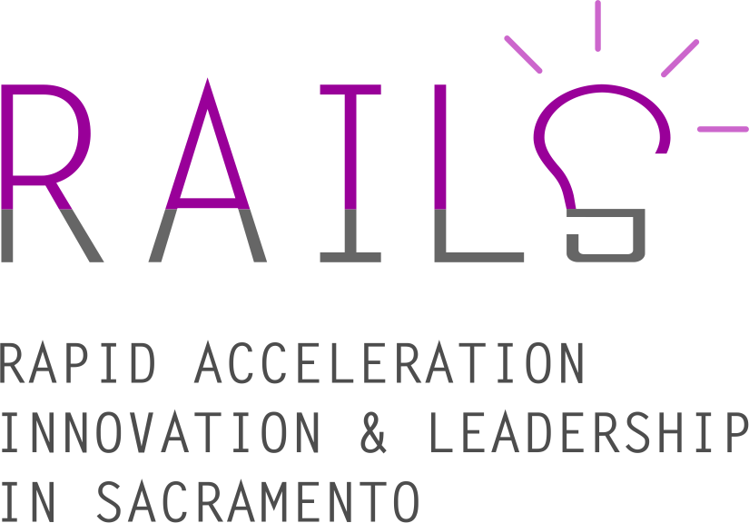

Sacramento is foryou.
If you're ready to take Sacramento to the next level of innovation, the City of Sacramento is here to help.
Sacramento graduates 10,000 students talented in business, engineering, and technology.1
Let's Make Sacramento the Hub for Innovation in the Country
The Rapid Acceleration, Innovation, and Leadership in Sacramento (RAILS) program from the City of Sacramento provides grants to organizations and companies to help catalyze the region's startup ecosystem.
Making Sacramento a Platform for Startups: RAILS Grants
The newly created Mayor's Office of Innovation and Entrepernuership has launched the RAILS program to develop the infrastructure needed in Sacramento to help develop, grow, and scale local startups. Through a mix of grant-making, networking, and hands-on support, we are here to give your organization the tools it needs to make Sacramento an even better place to start up.
The city has allocated roughly $1.5M to help those organizations already helping the startup ecosystem do even more.
Acceleration
Good entreprenuers rely on other ones. We're looking for accelerator or incubator programs, based in Sacramento, focused on Sacramento, that can help take startups to the next level -- be that fundraising, hiring, sales/marketing, or anything else.
Innovation
Innovation is at its best when it serves the needs of the community. That's why we're seeing partners focusing on building or leveraging technology that helps the community and the city government itself work better for everyone.
Leadership
Sacramento has a pipeline of potential entrepernuers: recent grads, residents looking to start a new business, and young people seeking to learn how to code. Proven programs exist, and we want to help them expand their reach in Sacramento for more participation, diversity, and inclusion.
Why the time is now for Sacramento
In a word: Momentum

Community Coming together
The Mayor's Office is creating a Technology, Innovation, and Entrepreneurship Council (MTIEC). Even at the first planning meeting, over 60 local entrepernuers, investors, and leaders came together and agreed on two thing: there's something special happening here -- ranging from new startups springing up to established ones raisings rounds and scaling -- and that we all should work together to capitalize on this moment to put Sacramento on the map.
City Hall Opening its Doors
It's too often that it's said that impossible to work with the city. That's changing. Sacramento is opening up its data as fodder for new companies, placing city staff in co-working space around town, and even identifying challenges they see in their day-to-day jobs, which -- when solved -- could become scaleable businesses that work for not just a city, but every city. The door's open; come in.
Principles
RAILS is designed to support entrepernuership in Sacramento, but not just any startup or organization will meet our criteria. The city has made commitments to diversity, delivery, and direct impact:

Diversity, Openness, Inclusion
The draft web design standards are designed to provide designers and developers easy-to-use tools to most effectively deliver the highest quality government websites to the American people.

Lean, Collaborative, and Proven
These guidelines focus on accessibility at every step of the design process, setting you on the path to building a usable, accessible site. From colors to code, these tools help you meet high standards of accessibility and conform to Section 508 Standards.

Fills a gap in the industry
These patterns and designs are made to be easily adaptable. These guidelines encourage consistency over uniformity, to give the American people a sense of familiarity and ease when navigating government services, while also allowing for customization of each agency’s unique flavor.

City would be "catalytic"
We reviewed, tested, evaluated, and repurposed patterns, code, and designs from dozens of government and private sector style guides to make use of tried-and-true best practices.
Why Vote.USA.gov?
We wanted to create a better experience for voters.
In response to the significant number of visitors on USA.gov that regularly query voter registration, we created a mechanism for registering to vote.
If you need more information on voting or the election process, visit USA.gov/voting. To find this information in Spanish, visit GobiernoUSA.gov.
To learn more about our current progress — and to make suggestions — visit our code repository and issue tracker.